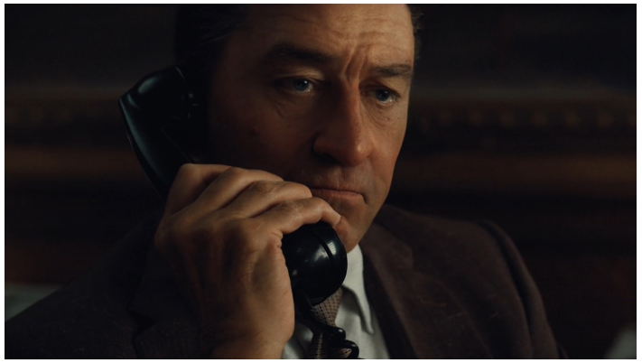
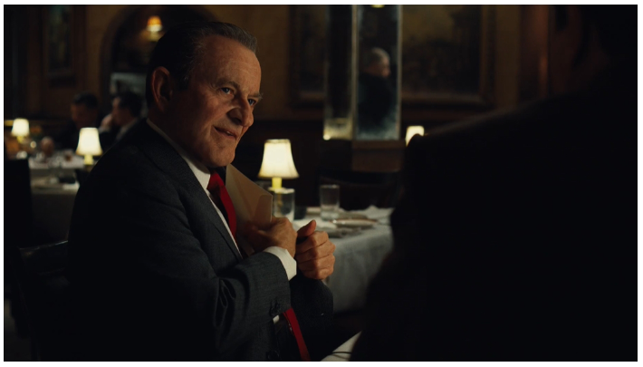
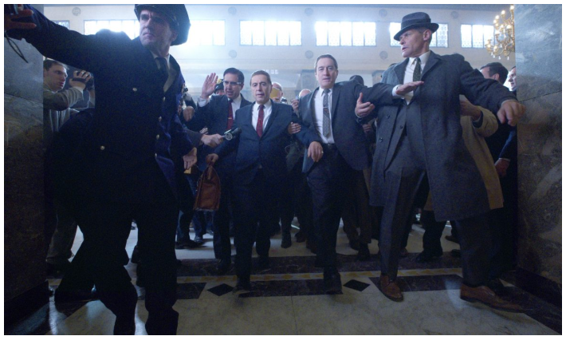
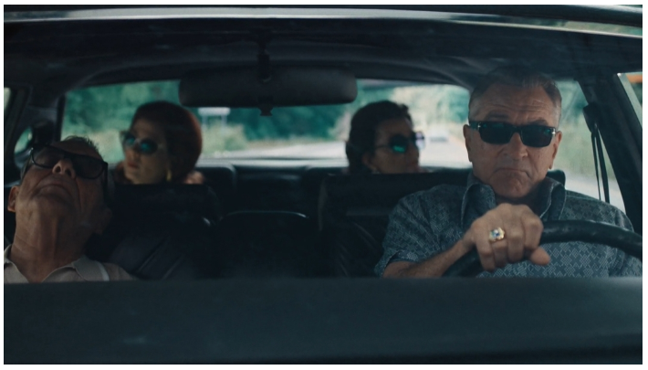

미국의 거장인 마틴 스코세이지(77) 감독은 이 영화 공개를 앞두고 뉴욕타임스에 기고문을 보내 마블 영화를 혹독하게 비판했습니다. ‘예술의 본질을 내팽겨친 비즈니스’라는 것이죠. 그래서 당신 영화는요? 묘한 반발심에 영화를 보고난 후 느낌은 … ‘그 영감, 그런 말 할 만 하네’였습니다. 마블에 대한 비판은 동의하기 어렵지만, 그의 자신감엔 근거가 있다고 느껴졌기 때문입니다.
뉴욕갱스터의 완전판
스코세이지 감독의 뉴욕갱스터 영화는 <좋은 친구들>과 <갱스 오브 뉴욕> 등으로 대표됩니다. 이런 영화가 그를 거장으로 만들었다면 <아이리시맨>은 뉴욕갱스터 영화의 완결판으로 불릴만 합니다. 스코세이지 감독은 이 영화를 통해 하고 싶은 이야기를 하나도 남김없이 다 토해내버린 듯 합니다. 시대를 대표하는 배우 로버트 드니로, 알 파치노, 조 페시의 초호화 캐스팅, 3시간30분이라는 살인적인 러닝타임만 봐도 알 수 있습니다. 더 쓸 배우도, 더 할 말도 남기지 않았습니다.

넷플릭스의 전폭적인 지원(제작비 약 2000억원) 속에 만들어진 이 영화에서 스코세이지 감독은 새로운 시도나 문법을 따르지 않습니다. 마블에 대한 그의 비판을 떠올려본다면 능히 예상할 수 있는 부분입니다. 늘 그가 하던대로, 격변기 미국의 사회상을 갱스터란 소재를 통해 입체적으로 보여주고 있습니다. 한국은 물론 미국의 젊은세대마저 생소한 사건(지미 호파 실종사건)을 모티브로 만들어졌지만 난해하게 느껴지지 않습니다. 그것은 시대를 초월하는 인간의 감성, 모순과 부조리를 고스란히 영화에 담아냈기 때문이 아닐까 합니다.
우정과 배신의 딜레마
앞서 언급했든 이 영화의 모티브가 된 사건은 지미 호파 실종 사건입니다. 전미트럭운송노조 위원장이던 호파는 1975년 7월, 소리소문 없이 증발해버리고 맙니다. 44년이 지난 지금까지 사건의 실체는 알려지지 않았습니다. 다만 노조에서 호파를 따르던 부하이자 마피아와 밀접하게 연결돼 있던 프랭크 시런이란 자가 ‘내가 그를 죽였다’고 후에 이야기했지만 이 역시 진실인지는 불분명합니다. 이 영화는 바로 시런(로버트 드니로)과 호파(알파치노)의 관계를 중심으로 끌고 갑니다.

영화 속에서 시런과 호파는 가족같은 친구로 인연을 이어갑니다. 마피아의 히트맨(청부업자)이었던 시런이 호파를 돕고, 호파는 시런을 노조 간부로 승승장구하도록 돕습니다. 하지만 마피아 러셀 버팔리노(조 페시)와 호파의 관계가 틀어지면서 시런은 엄청난 갈등을 겪게 됩니다. 당초 버팔리노를 통해서 ‘호파를 도와라’는 명령으로 시작된 관계이니 난처해질 수밖에 없는 것이죠.

이런 갈등은 누구나 겪을 수 있는 인간관계에 관한 이야기이기도 합니다. 가령 어떤 친구1의 소개로 만난 친구2와 더 오랜 시간을 보내며 친밀해졌다고 칩시다. 하지만 어느 순간 친구1이 친구2를 험담하기 시작합니다. 이제는 친구2가 나랑 더 친하니 친구1과 관계를 뚝 끊어버릴까요? 아니면 친구1 말대로 친구2와 지난 친분을 모두 접을까요?

어떤 선택을 하더라도 우정을 모두 지키거나, 어느 누구도 배신하지 않는 것은 불가능합니다. 시런이 처한 상황이 바로 이런 것이죠. 영화는 요양원에서 힘없는 늙은이가 된 시런의 모습으로 시작, 젊은 시절로 거슬러 올라가 우정과 배신에 관한 이야기를 차곡차곡 쌓아나갑니다. 2차 세계대전의 참전 군인 출신인 시런이 트럭 운전사에서 버팔리노를 알게 되고, 다시 호파와 연결되며, 결국엔 우정과 배신의 딜레마에 빠지는 이야기까지. 감독은 한 인간의 일대기를 차근차근 설득력있게 쌓아가며 관객들을 몰입하고 공감하게 만듭니다.


{kind=link}
{kind=link}
{kind=link}
{kind=link}
{kind=link}